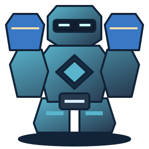

Shared 3D graphics foundation
Test lighting, models and animations before integrating them into the arcade. No pitches, progress or rewards are recorded here.
Scout prototypeLoading WebGL graphics. If unavailable, the classic preview remains below.

Device performance not yet measured.
Original prototype models, not final character artwork. All dependencies are hosted on this site; no microphone, camera, account access or uploads. Reduced motion is respected. No automatic sound.
Device test
Try all three models, switch lighting, rotate the camera, run Attack and Knockout, then return to Home. If the view is blank or slow, switch to Low quality or report the device and browser.